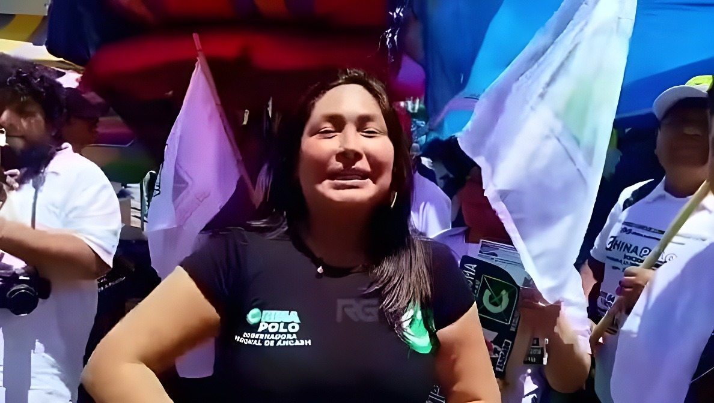

Le 19 septembre 2026, Susy Aponte Polo, dite « La China Polo », journaliste d'investigation et candidate au gouvernement régional d'Áncash, a été abattue en plein marché de Caraz, quinze jours avant les élections régionales et municipales. Quelques jours plus tôt, elle avait dénoncé publiquement des menaces de mort. Deux Vénézuéliens sont en détention préliminaire pour sicariat, mais la question centrale reste ouverte : qui a commandité le crime ?
Le samedi 19 septembre 2026, vers 12 h 40, Susy Isabel Aponte Polo a été tuée par balle à Caraz (province de Huaylas, région d'Áncash), avenue Ramón Castilla, à proximité du marché. Candidate au gouvernement régional pour le mouvement Socios por Áncash, elle distribuait de la propagande électorale avec ses sympathisants. Selon des témoins cités par la radio RPP, un homme l'a visée par derrière d'une balle dans la tête. Les médecins de l'hôpital San Juan de Dios de Caraz ont constaté son décès.
Cinq personnes qui l'accompagnaient ont été blessées par balle, dont trois mineurs selon Infobae. Au 23 septembre, deux d'entre elles restaient intubées en soins intensifs à Huaraz, avec un pronostic réservé. La scène a été enregistrée par le journaliste Víctor Castillo, qui la retransmettait en direct.
Connue en Áncash sous le nom de « La China Polo », Susy Aponte Polo dirigeait le programme en ligne China Polo Dominical, où elle dénonçait des soupçons de corruption visant la police, le parquet et des autorités locales, ainsi que le crime organisé et l'exploitation minière illégale. Elle avait pris part, le 15 septembre, au débat des candidats d'Áncash organisé par le Jury national des élections (JNE). Quelques heures avant sa mort, elle annonçait une enquête sur un candidat à la mairie de Huaraz pour son émission du soir.
Elle demande des garanties à la préfecture d'El Santa (Chimbote), après avoir été prévenue par téléphone d'un projet d'attentat contre elle.
Dans une vidéo, elle affirme avoir reçu des appels de trois prisons et accuse le chef de la Dirincri, le général Víctor Revoredo Farfán, d'avoir ordonné un attentat contre elle ; elle dit avoir porté plainte.
Elle participe au débat du JNE. Selon la presse, les caméras d'un hôtel de Caraz filment le même jour l'arrivée du tireur présumé, accompagné de trois personnes.
Attaque au marché de Caraz vers 12 h 40 ; le tireur présumé est arrêté peu après.
L'enquête, d'abord ouverte pour féminicide, est requalifiée en sicariat. Revoredo est muté à la Direction des affaires internationales « par nécessité du service ». Un second suspect est arrêté à Lima.
Obsèques à Lima. Le parti Juntos por el Perú annonce une motion de censure contre le ministre de l'Intérieur, César Astudillo.
Selon La República et Infobae, la police reconstitue l'itinéraire du tireur présumé depuis Lima et identifie trois autres Vénézuéliens.
Le tireur présumé, Luis Iván Obispo Díaz, ressortissant vénézuélien, a été arrêté quelques minutes après les faits sur la Carretera Central, blessé par des tirs qui, d'après les premiers rapports, provenaient de l'équipe de sécurité de la candidate. Le pistolet Glock 9 mm trouvé sur lui avait été déclaré volé en novembre 2023 au domicile d'un policier de Villa El Salvador (Lima). Un second Vénézuélien, Ronald José Toro, a été interpellé à Santiago de Surco, à Lima.
Le tribunal de Caraz a ordonné 15 jours de détention préliminaire contre les deux hommes pour sicariat, jusqu'au 4 octobre, date du scrutin. Le procureur de la Nation, Tomás Gálvez, avait évoqué trois arrestations (le tireur, un financeur présumé et une personne ayant transporté le tireur), alors que le parquet n'en confirmait publiquement que deux.
| Personne | Rôle présumé | Statut |
|---|---|---|
| Luis Iván Obispo Díaz | Tireur | Détention préliminaire |
| Ronald José Toro | Coordinateur logistique | Détention préliminaire |
| Trois autres Vénézuéliens | Appui opérationnel | Identifiés selon la presse |
| Commanditaires | — | Non identifiés |
Selon des sources policières citées par La República, trois hypothèses sont explorées, la plus importante étant le mobile politique lié à ses dénonciations ; la vengeance du crime organisé n'est pas écartée, et la piste Revoredo est également prise en compte. Infobae précise toutefois qu'aucune responsabilité des personnes qu'elle avait désignées n'a été établie à ce stade. Le procureur de la Nation évoque plusieurs hypothèses sans en révéler le détail.
Le JNE, le Conseil de la presse péruvienne, la Défenseure du peuple et la Rapporteuse spéciale de la CIDH sur la liberté d'expression ont condamné le crime. La mission technique du Haut-Commissariat de l'ONU aux droits de l'homme au Pérou réclame « une enquête prompte, exhaustive, indépendante et transparente », soulignant que l'État doit garantir la sécurité du processus électoral et de l'exercice du journalisme. Selon la police, quatre journalistes péruviens avaient déjà été tués en 2025.
À Lima, la gauche et le centre d'opposition attaquent la politique de sécurité du gouvernement de Keiko Fujimori et souhaitent censurer le ministre de l'Intérieur ; Fuerza Popular et Renovación Popular s'y opposent, le chef du gouvernement Luis Galarreta jugeant qu'écarter un ministre ne réglera pas le problème du crime organisé.
Au 23 septembre, la chaîne d'exécution est en grande partie documentée : un tireur arrêté, un coordinateur présumé à Lima, des complices identifiés, une arme volée à un policier. En revanche, personne n'a été désigné comme commanditaire, alors que la victime avait elle-même accusé un haut gradé de la police d'avoir ordonné son assassinat. L'affaire cristallise trois fragilités : la sécurité des journalistes qui enquêtent sur la corruption, celle d'une campagne électorale à quinze jours du scrutin, et la capacité de l'État à protéger les personnes menacées. Le parquet dispose jusqu'au 4 octobre, jour du vote, pour préciser le rôle de chacun et remonter la chaîne.
El 19 de septiembre de 2026, Susy Aponte Polo, conocida como «La China Polo», periodista de investigación y candidata al Gobierno Regional de Áncash, fue asesinada a balazos en pleno mercado de Caraz, quince días antes de las elecciones regionales y municipales. Pocos días antes había denunciado públicamente amenazas de muerte. Dos venezolanos están en detención preliminar por sicariato, pero la pregunta central sigue abierta: ¿quién ordenó el crimen?
El sábado 19 de septiembre de 2026, hacia las 12:40, Susy Isabel Aponte Polo fue asesinada a tiros en Caraz (provincia de Huaylas, región Áncash), en la avenida Ramón Castilla, cerca del mercado. Candidata al Gobierno Regional por el movimiento Socios por Áncash, repartía propaganda electoral junto a sus simpatizantes. Según testigos citados por RPP, un hombre le disparó por la espalda en la cabeza. Los médicos del Hospital San Juan de Dios de Caraz certificaron su fallecimiento.
Cinco personas que la acompañaban resultaron heridas de bala, entre ellas tres menores de edad según Infobae. Al 23 de septiembre, dos de ellas seguían intubadas en cuidados intensivos en Huaraz, con pronóstico reservado. La escena quedó registrada por el periodista Víctor Castillo, que transmitía en vivo.
Conocida en Áncash como «La China Polo», Susy Aponte Polo dirigía el programa digital China Polo Dominical, donde denunciaba presuntos casos de corrupción que involucraban a la policía, el Ministerio Público y autoridades locales, así como el crimen organizado y la minería ilegal. El 15 de septiembre había participado en el debate de candidatos de Áncash organizado por el Jurado Nacional de Elecciones (JNE). Horas antes de su muerte anunciaba una investigación sobre un candidato a la alcaldía de Huaraz para su programa de esa noche.
Solicita garantías ante la Prefectura de El Santa (Chimbote), tras ser advertida por teléfono de un plan de atentado en su contra.
En un video afirma haber recibido llamadas de tres penales y acusa al jefe de la Dirincri, general Víctor Revoredo Farfán, de haber ordenado un atentado contra ella; dice haber presentado denuncia.
Participa en el debate del JNE. Según la prensa, las cámaras de un hospedaje de Caraz registran ese mismo día la llegada del presunto sicario junto a tres personas más.
Ataque en el mercado de Caraz hacia las 12:40; el presunto autor material es capturado poco después.
La investigación, abierta primero por feminicidio, se recalifica como sicariato. Revoredo es reasignado a la Dirección de Asuntos Internacionales «por necesidad del servicio». Se captura en Lima a un segundo sospechoso.
Funeral en Lima. Juntos por el Perú anuncia una moción de censura contra el ministro del Interior, César Astudillo.
Según La República e Infobae, la Policía reconstruye la ruta del presunto sicario desde Lima e identifica a otros tres venezolanos.
El presunto autor material, Luis Iván Obispo Díaz, ciudadano venezolano, fue capturado minutos después del ataque en la Carretera Central, herido por disparos que, según los primeros reportes, provinieron del equipo de seguridad de la candidata. La pistola Glock de 9 mm hallada en su poder había sido denunciada como robada en noviembre de 2023 en la vivienda de un policía en Villa El Salvador (Lima). Otro venezolano, Ronald José Toro, fue detenido en Santiago de Surco, en Lima.
El Juzgado de Caraz ordenó 15 días de detención preliminar contra ambos por sicariato, hasta el 4 de octubre, día de las elecciones. El fiscal de la Nación, Tomás Gálvez, había mencionado tres detenidos (el sicario, un presunto financista y quien lo habría trasladado), mientras que el Ministerio Público solo confirmó públicamente dos.
| Persona | Rol presunto | Situación |
|---|---|---|
| Luis Iván Obispo Díaz | Autor material | Detención preliminar |
| Ronald José Toro | Coordinador logístico | Detención preliminar |
| Otros tres venezolanos | Apoyo operativo | Identificados según la prensa |
| Autores intelectuales | — | No identificados |
Según fuentes policiales citadas por La República, se manejan tres hipótesis, la principal es el móvil político vinculado a sus denuncias; no se descarta una venganza del crimen organizado y también se considera la línea Revoredo. Infobae precisa, sin embargo, que hasta ahora no se ha establecido responsabilidad alguna de las personas que ella había señalado. El fiscal de la Nación menciona varias hipótesis sin revelar detalles.
El JNE, el Consejo de la Prensa Peruana, la Defensoría del Pueblo y la Relatoría Especial para la Libertad de Expresión de la CIDH condenaron el crimen. La Misión Técnica de la Oficina del Alto Comisionado de la ONU para los Derechos Humanos en el Perú pide «una investigación pronta, exhaustiva, independiente y transparente», y recuerda que el Estado debe garantizar un entorno seguro para el proceso electoral y el periodismo. Según la Policía, cuatro periodistas peruanos ya habían sido asesinados en 2025.
En Lima, la oposición de izquierda y centro critica la política de seguridad del gobierno de Keiko Fujimori y busca censurar al ministro del Interior; Fuerza Popular y Renovación Popular se oponen, y el premier Luis Galarreta considera que apartar a un ministro no resolverá el problema del crimen organizado.
Al 23 de septiembre, la cadena de ejecución está en buena parte documentada: un sicario capturado, un presunto coordinador en Lima, cómplices identificados y un arma robada a un policía. En cambio, nadie ha sido señalado como autor intelectual, aunque la propia víctima había acusado a un alto mando policial de haber ordenado su asesinato. El caso concentra tres fragilidades: la seguridad de los periodistas que investigan la corrupción, la de una campaña electoral a quince días de la votación y la capacidad del Estado para proteger a las personas amenazadas. La Fiscalía tiene hasta el 4 de octubre, día del voto, para precisar el rol de cada uno y remontar la cadena.